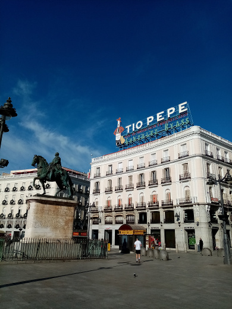
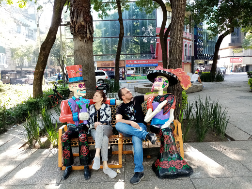
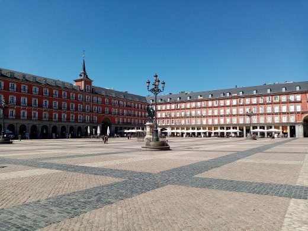
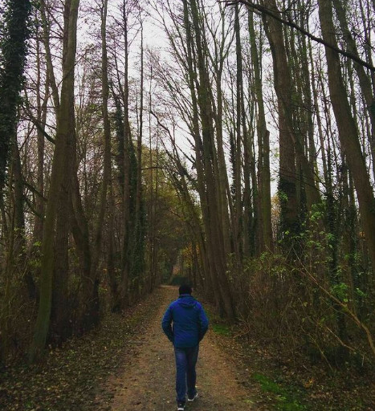
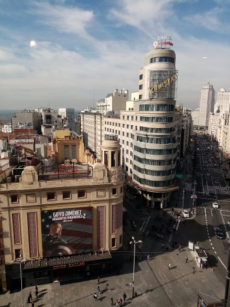
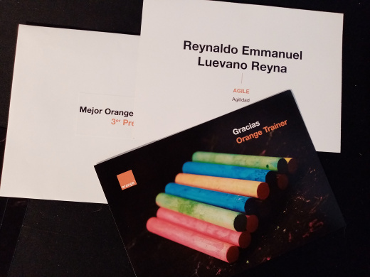

Sin embargo debido al trabajo de mi padre, vivi los primeros 4 años en México, D.F., para después nuevamente regresar a tierras hidrocálidas
Desde que empecé a manejar mi primera PC, una 486 de IBM me interesó la computación, por lo que al llegar a la universidad, estudié la Ingenieria en Sistemas Computacionales. Mi alma mater, como se puede suponer, es la Universidad Autónoma de Aguascalientes. Estuve dentro de los primeros 10 lugares a nivel nacional en el Examen General de Egreso de la Licenciatura
Empecé mi carrera profesional al inicio de la universidad en una pequeña empresa de servicios de IT a PyME sin retribución monetaria, ya que lo que me interesaba era adquirir experiencia profesional. Después de 2 años y medio decidí lanzarme a la aventura como Freelance y monté un pequeño negocio de Servicios IT para pequeñas y medianas empresas
Soluciones Digitales era el nombre comercial que utilizaba ante mis clientes. Fue una época en la que aprendí bastante sobre el trato con clientes y el diseño de soluciones a sus problemas relacionados con IT. Los servicios que ofrecía iban desde diseño y configuración de redes LAN, mantenimiento de equipos, configuración de servidores, así como la venta de Software de Terceros y Licenciamiento OEM..
Tengo que confesar que mis horas de dormir en dicha época eran pocas, ya que durante la mañana atendia a mis clientes, en la tarde asistía a la Universidad y por la noche regresaba para realizar trabajo y entregar a mis clientes al día siguiente. Aunque el negocio iba bien, 1 año antes de terminar la carrera universitaria tenía en mente salir de México para estudiar un master en Ingenieria de Software
Con el objetivo de hacer un máster fuera de México, por lo que empecé a buscar universidades donde realizar dicho master. La elegida fue la Universidad de Southampton en UK. Sin embargo el presupuesto necesario se escapaba un poco de mis manos, por lo que empecé a buscar formas para poder llegar ahi.
Un dia por azares del destino me topé con un anuncio de una empresa consultora en IT en Aguascalientes, en el cual se anunciaba la creación de un equipo Java que se desplazaría a Madrid, España. Aún recuerdo, como al hacer la entrevista, el personal de RH se sorprendia de que tuviera una empresa y de que quisiera entrar a esta empresa con un salario de practicante, además de que los integrantes del equipo serían seleccionados a partir de un grupo de 30 que estaba recibiendo una formación desde hace 1 mes. Mi posición en dicho momento era por un objetivo mayor y por las posibilidades de "saltar el charco" y acercarme a UK
Y nos fuimos pa Madrid
Entré en el curso y dí lo mejor de mí. Fui seleccionado para ir a Madrid, España y el 2 de Febrero de 2007 volé al antiguo continente. Al llegar a España, daría comienzo una nueva etapa de mi vida, descubrí mi pasión por viajar y conocer nuevas culturas. Formaría mi "familia" en Madrid con varios de los que fuimos desde Aguascalientes más gente que conocí allá.
Tomé la decisión de realizar el master de Ingenieria de Software en Madrid en la Universidad Pontificia de Salamanca, sobre todo por la facilidad geográfica y por la flexibilidad de trabajar y estudiar a la vez. En dicha época conocería a un grupo de amigos, que son geniales y estimo mucho, con los cuales sigo manteniendo el contacto
Mi etapa en Madrid, estuvo llena de varios proyectos interesantes, que hicieron que me especializará en SOA, procesos de Negocio y aplicaciones J2EE. Fui poco a poco tomando más responsabilidad para pasar desde un programador Junior hasta Jefe de Proyecto
En cuanto al aspecto laboral, siempre doy mi mejor versión. Tal fue el caso, que en uno de los proyectos que me tocó llevar como jefe de Proyecto, el cliente estaba localizado en México. El proyecto terminó exitosamente y me ofrecieron la oportunidad de regresar a México con trabajo
Regreso a la tierra
Corría Enero de 2015, casi 9 años después de haber emigrado de México. Yo tenía que quitarme de la cabeza la incógnita de regresar a mi tierra natal, así que lo hice.
Me establecí en Querétaro, y me tocaba ir mucho a Ciudad de México para hablar con el cliente del nuevo Proyecto del cual estaba a cargo. Era algo totalmente desgastante fisicamente el ir y venir casi diario entre ambas ciudades.
También, no es por nada pero Querétaro no me convenció para vivir. Y es que me di cuenta que mi lugar era fuera de México, aunque mi familia sigue viviendo en Aguascalientes y la quiero demasiado. Mi felicidad no estaba ahi.
Madrid, Madrid, Madrid
Regresé a Madrid en Agosto de 2015. Arrancaba una nueva etapa y decidi renovarme por completo profesionalmente y surgió una oportunidad con una Empresa donde podria participar en un proyecto con marcos de trabajo agiles y tecnología nueva.
Desde ahi cambié totalmente el chip en la forma en que llevaba Proyectos e incluso de seguir aprendiendo y mejorando cada dia profesional y personalmente.
Conocí gente nueva y estuve trabajando con un gran equipo que estaba en Cádiz, aprendí demasiado ya que estuve en el equipo que llevaba el SW ERP de la empresa. Tengo que decir que fue una etapa brutal de aprendizaje de cosas nuevas para mi. Empecé incluso a buscar grupos y meetups sobre tecnologias nuevas y nuevas formas de trabajo, incluido Agile Spain
Un año despúes, se presentaría una nueva oportunidad laboral que me llevaria esta vez más al este de Europa
Hallo Deutschland!
Noviembre 2016 y tocó irse al pais del Oktoberfest. Alemania!. Mi esposa Olga ( a quien conocí en uno de mis viajes) y yo hicimos las maletas y volamos hacia allá. Estuvimos en una ciudad cerca de Düsseldorf y tocó tirar de mi Alemán que habia estudiado en España.
Ejercí como Scrum master en uno de los proyectos y todavia recuerdo como a las personas de Negocio le impresionaba esta forma de trabajo que estaba planteando, no estaban acostumbrados a dejar los word de mil páginas de requisitos por workshops donde esbozaramos juntos la solución y a partir de ahi construyeramos el SW.
Estuve a cargo de un equipazo de Portugueses y la verdad que se creo un equipazo junto con nuestra Product Owner que era Alemana
Además de esto me tocó participar en un gran programa de Fusión entre 2 Bancos, la verdad que conocí a gente muy buena y a uno de los Jefes que sin duda admiro bastante: Mr. Pomatta
Sin embargo el clima de Alemania no ayuda, jaja, en verdad que se echa de menos el solecito y el ambiente madrileño, por lo que mi esposa y yo decidimos regresar a los Madriles aprovechando que una Startup me contactó y me ofreció trabajo en un area que despertó muchisimo interes en mi y que no habia trabajado hasta el momento: Big Data
Yo me bajo en Atocha
Regresamos a Madrid en Marzo de 2018 y me incorporé como Scrum Master en una Startup. Cual iba a ser mi sorpresa cuando mi responsable al mes de incorporarme anunciaba que dejaba la empresa y que yo cogia sus responsabilidades
Pasé entonces a ser Service Delivery Manager y tocó relevantar un equipo y un proyecto que iba bastante mal. Tocó arremangarse y sacar el máximo para darle la vuelta a la situación
Aprendí bastante e incluso me tocó formar a otro equipo en AWS S3, ya que tuvimos que utilizarlo para otro proyecto. Creo haber calado en los equipos que estaba a mi cargo, y haber hecho buena amistad con las personas
Se me presentó la oferta de entrar al sector de Telecomunicaciones, en esta ocasión como Agile Coach y ayudar al equipo que estaba llevando un gran Proceso de Transformación. Por lo que en Abril 2019, me incorporé a una gran Operadora Telefónica, donde me encuentro ahora.
He aprendido muchisimo y he mejorado profesionalmente ya que me ha tocado impartir formaciones sobre Marcos de Trabajo como XP, SCRUM, KANBAN, LEAN. Eso no quita que siga buscando mejorarme cada dia ahora con vistas a las tecnologías CLOUD. Tal es mi afición que ahora en Noviembre 2020 me certifiqué en AWS como Solutions Architect Associate...